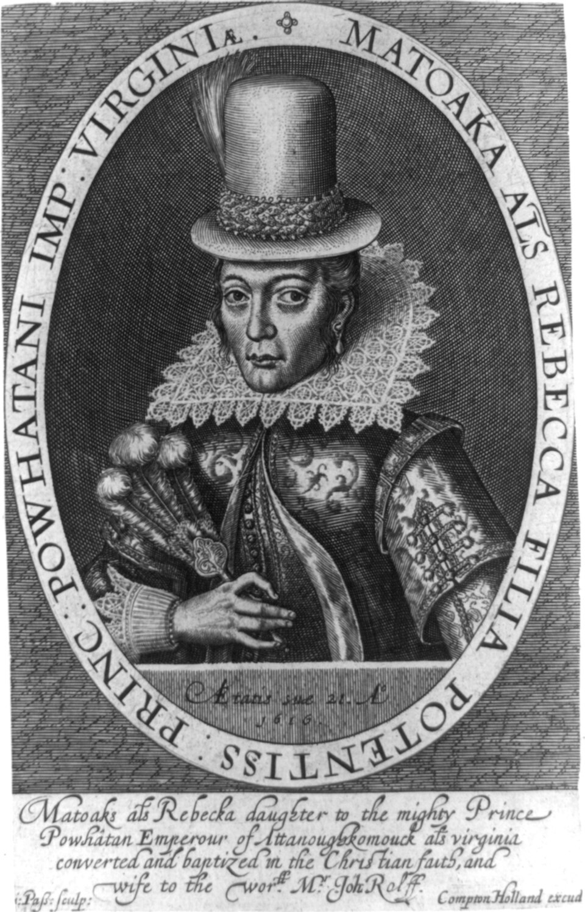

Who I Am


My name is Pocahontas, and I was born around 1596 in what is now Virginia. My name is often associated with the Powhatan people, a group of Indigenous communities led by my father, Chief Powhatan. My childhood took place long before the United States existed.
In 1607, English settlers established Jamestown in Virginia. My people and the English settlers had a complicated relationship involving trade, cultural differences, conflict, and negotiations. I became known for my connections with the English, especially Captain John Smith. However, some popular stories about my life have been exaggerated or romanticized over time.
In 1614, I married an Englishman named John Rolfe. I later traveled to England, where I was presented to English society as an example of the relationship between the English colony and Indigenous people. I died in 1617 in England, when I was approximately 21 years old. Today, my story remains an important part of the history of early colonial Virginia and the Powhatan people.